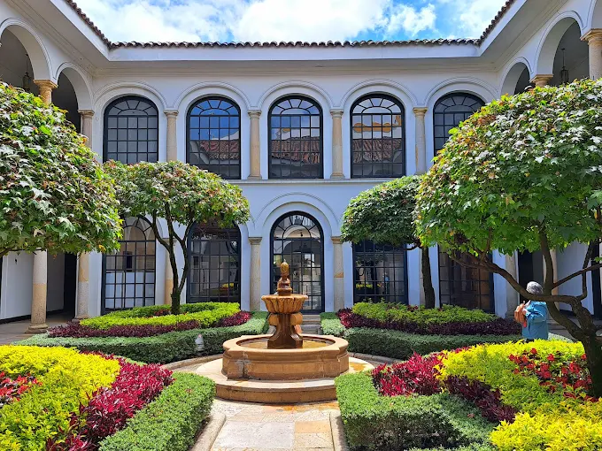
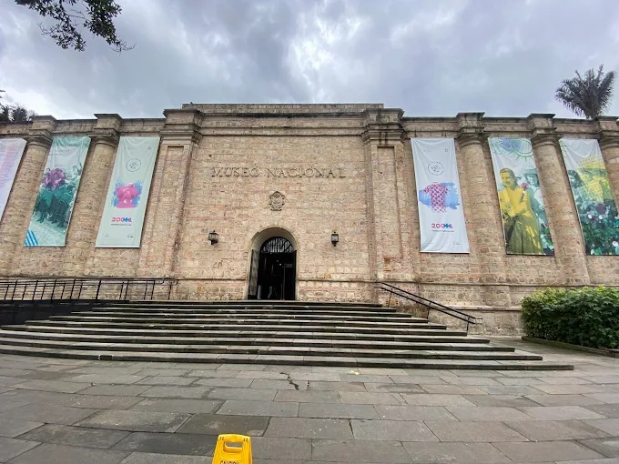
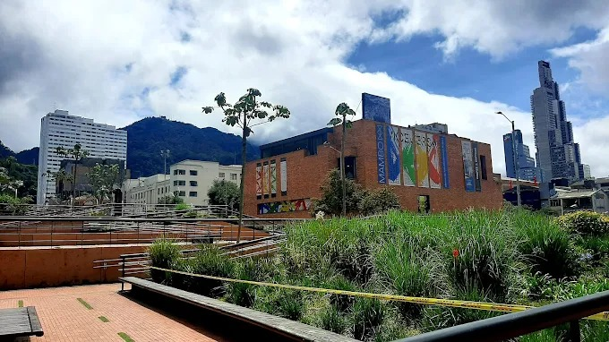
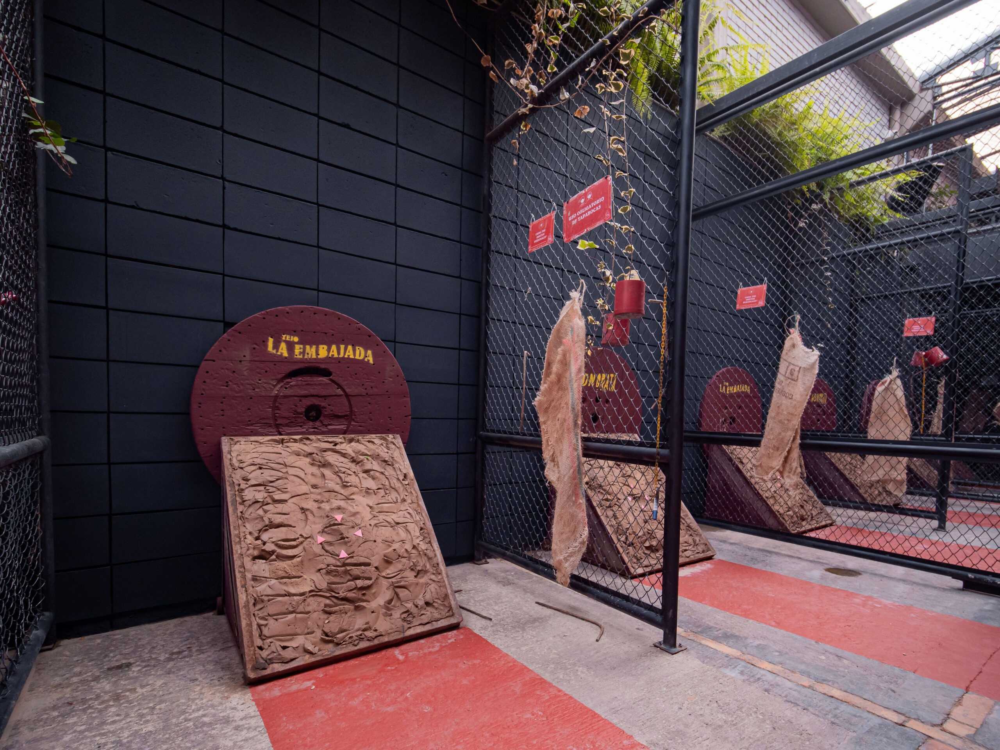
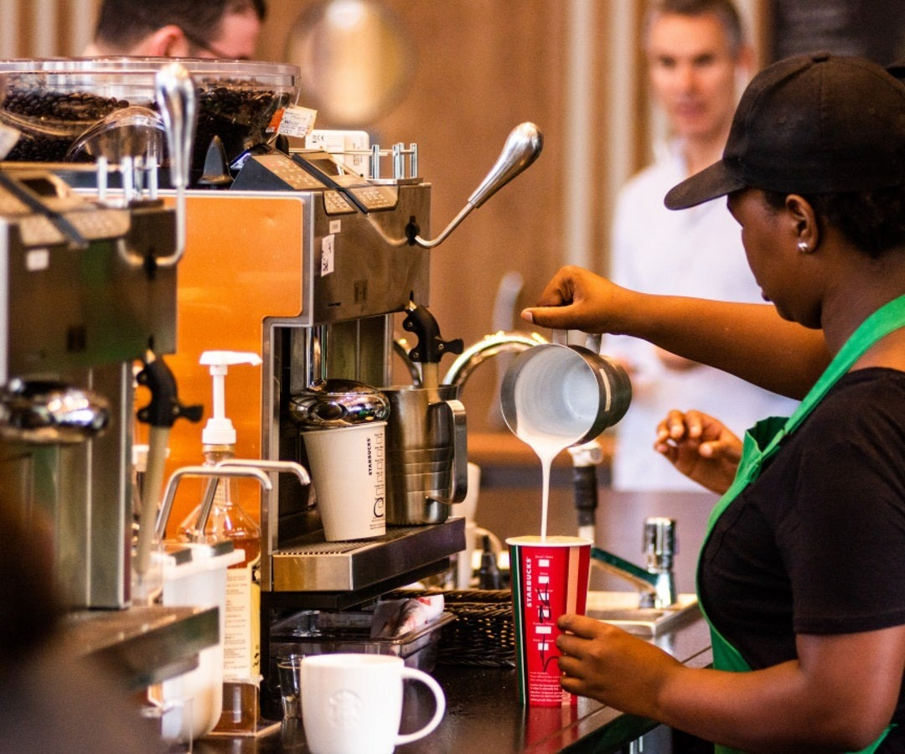
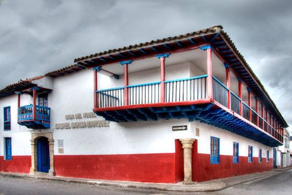

Experiencias Culturales
Sumérgete en la vibrante escena artística y tradicional de Bogotá.
Arte y Museos

Museo Botero
El museo más visitado de Bogotá. Alberga la mayor colección de obras donadas por Fernando Botero: 123 obras del maestro (pinturas y esculturas) y 85 de grandes artistas internacionales (Picasso, Dalí, Miró, etc.). Una experiencia íntima y emotiva en el corazón de La Candelaria.
Duración: 2 horas
Museo Nacional
El museo más antiguo de Colombia (1823). Recorre 2.500 años de historia nacional a través de arte, arqueología y objetos que cuentan la historia de la nación. Exposiciones permanentes y temporales de altísimo nivel.
Duración: 3 horas
MAMBO
El templo del arte contemporáneo en Colombia. Exposiciones temporales de artistas nacionales e internacionales, instalaciones interactivas y una colección permanente que refleja la evolución del arte moderno y contemporáneo del país.
Duración: 1.5 horasTradición y Cultura Viva

Juego de Tejo
El deporte nacional de Colombia. Una experiencia explosiva, divertida y cultural donde lanzas un “mecha” contra un blanco lleno de pólvora. Combina tradición, competencia y fiesta.
Duración: 2 horas
Experiencia de Cata de Café en Bogotá
Sumérgete en el alma de Colombia a través de su café. En esta experiencia sensorial guiada aprendes sobre el origen, tostado, preparación y catas profesionales mientras pruebas 4-6 variedades premium de café colombiano (incluyendo exóticos como Geisha y Pink Bourbon). Es el plan perfecto para amantes del café y una de las experiencias más auténticas de Bogotá.
Duración: 3 horas
Casa Museo de Gabo en Bogotá
El espacio cultural más importante dedicado a Gabriel García Márquez en la capital. Ubicado en La Candelaria, este edificio diseñado por Rogelio Salmona alberga exposiciones permanentes sobre la vida y obra del Nobel, una librería especializada del Fondo de Cultura Económica, auditorio y espacios interactivos donde revives el universo de Cien años de soledad y El amor en los tiempos del cólera.
Duración: 1 hora